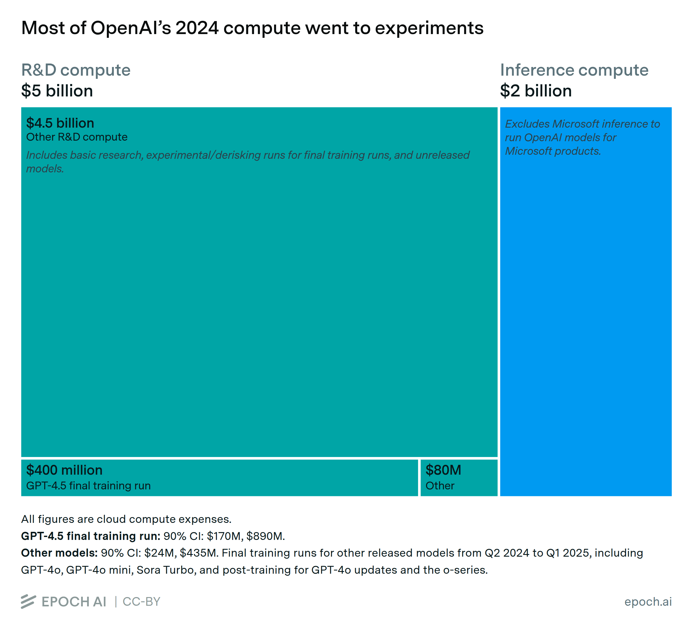
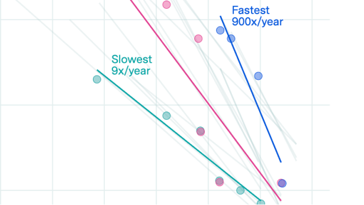

最近腾讯财报会上，管理层没有大谈 AI 用户增长，而是反复强调"推理成本可控性"和"AI 对主业的反哺"。
这很反常。
过去二十年，互联网公司只要把"用户数 × 留存率"做上去，资本市场就会买单。DAU、MAU 是万能通行证。但 AI 产品不是这样运转的。当每次对话都要消耗真实算力，当用户越多亏损越大，互联网的那套增长公式——正在失效。
本文提出 5 个反共识判断，每一个都在挑战你以为的"行业常识"。
核心论点：AI 没有让互联网规律归零，但它正在让过去二十年我们习以为常的增长公式变得不完整。用户数 × 留存率仍然重要，但必须加上"单位推理成本"和"价值反哺主业"这两个新变量。
互联网产品的经典公式是：用户越多 → 边际成本趋近于零 → 利润越高。这条公式在软件时代无往不利，在 AI 产品上不成立了。
每一次 AI 对话背后都有真实的算力账单。模型推理（inference）不是免费的——它需要 GPU 算力、内存带宽、电力、冷却。这些成本随使用量线性（甚至超线性）增长，与"软件边际成本为零"的互联网信条完全相反。
Epoch AI 分析显示，OpenAI 在 2025 年上半年的推理支出已超过 50 亿美元，超过同期收入。[1] 这意味着用户增长越快，亏损窟窿越大——除非你找到办法让用户产生的价值超过每次推理的成本。
💡 关键洞察：DAU（日活用户）在 AI 产品里不是一个可以独立庆祝的指标。一个每天用 AI 写诗的 DAU 和一个每天用 AI 辅助写生产代码的 DAU，对单位经济模型的贡献是完全不同的。前者是成本中心，后者是收入引擎。
所以 AI 产品的增长逻辑不是"先做大规模再想变现"，而是"每增长一个用户都要算清账"。这也是为什么越来越多的 AI 产品开始对重度用户收费——不是因为贪婪，而是因为边际成本不为零。
好消息是，推理成本正在快速下降。过去三年，LLM 推理成本下降了约 1000 倍（a16z/UBS 数据）[2]。这意味着"单位经济模型转正"的临界点正在不断下移，更多应用场景正在跨过盈利门槛。

数据来源：[1] Epoch AI / 搜狐财经，2025年12月；[2] a16z/UBS，2025
媒体喜欢把 AI 竞争描述成"模型能力对抗"——谁的模型更强，谁就赢。但现实是，你能不能稳定地以可接受的成本提供服务，比你模型排行榜第几名更重要。
2024 年底，先进封装产能制约了 AI 芯片的生产；2025 年，HBM（高带宽内存）持续成为供应链瓶颈。[3] 这意味着即便你做出了最好的模型，也可能因为算力供给不足而无法稳定服务用户。
Gartner 预测 2026 年全球 AI 支出将达 2.52 万亿美元，同比增长 44%。[4] 这背后是整条供应链——从 GPU 到 HBM 到数据中心的全面军备竞赛。模型只是冰山一角。
对于创业公司而言，这意味着：
数据来源：[3] Epoch AI，2026年5月；[4] Gartner，2026年1月
2025 年被产业界公认为"AI Agent 元年"。但很多人还没想清楚：Chatbot 和 Agent 的商业逻辑完全不同。
Chatbot 是"你问我答"，用户没有完成具体任务的强付费意愿；Agent 是"你交代任务，我搞定结果"，任务完成即有明确价值锚点。这是质的跃迁——AI 从一个"对话界面"升级为"任务执行引擎"，商业化路径也从卖 token 转向卖结果。
💡 关键数据：Cursor（AI 编程助手）ARR 已达 5 亿美元，Replit ARR 达 1.5 亿美元。[5] 这两款产品的共同点：不是让你"聊天"，而是帮你完成任务。全球 Agent 市场预计 2026 年将超过 200 亿美元。[6]
当 AI 嵌入工作流（workflow），它就不再是"用完即走"的工具，而是"离不开"的基础设施。Agent 的留存率和付费转化率，天然高于 Chatbot 一个数量级。
Chatbot 会是入口，但不会是终局；Agent 才是那个让 AI 真正产生商业价值的战场。

数据来源：[5] KM 内网，2025年10月；[6] 腾讯新闻 / CSDN，2025
互联网信奉"唯快不破"——快速迭代、快速占领用户心智。但 AI 产品如果只追求快，往往会付出更大的代价：幻觉问题、安全风险、用户体验崩塌，都是"快"的副产品。
推理成本的下降速度给了我们"慢下来"的底气。过去三年，LLM 推理成本下降了约 1000 倍。这意味着今天慢慢打磨产品、等成本曲线继续下移再大规模推广，反而是更理性的策略。
在金融、医疗、企业代码生成等高信任场景中，可靠性 > 速度。一个慢 200ms 但从不幻觉的模型，比一个快 200ms 但每周出一次严重错误的模型更有商业价值。
慢，不是拖延，而是对可靠性、可控性、体验融合的刻意投入。在 AI 产品里，慢有时才是真正的快。
数据来源：a16z/UBS，2025
资本市场对 AI 投入的典型担忧是："这是在烧钱，会拖累利润"。但这个判断忽略了一个关键变量：AI 有没有提升主业效率。
腾讯财报会释放的信号值得玩味：管理层没有单独强调 AI 业务的独立盈利，而是强调 AI 对广告推荐、对代码生成效率、对客服成本的改善。[7] 这就是"反哺主业"的逻辑——
AI 投入不是一项独立支出，而是一笔降低全公司运营成本的效率投资。
对比两种路径：
① 烧钱买增长：用户量上去了，单位经济模型还是负的 → 价值毁灭
② 效率提升反哺：AI 让主营业务更赚钱，利润反而改善 → 价值创造
前者是陷阱，后者才是 AI 时代正确的投入逻辑。这也是为什么腾讯管理层在财报会上反复强调"推理成本可控性"——因为他们已经在用 AI 降低全公司的运营成本，而不是单纯地为 AI 业务烧钱。
数据来源：[7] 腾讯财报会议公开记录，2026年5月
当你在评估一个 AI 产品、一项 AI 战略，或一笔 AI 投资时，问这 5 个问题——答不清楚，再性感的 AI 故事也先打个问号：
互联网时代，我们学会了用"眼球"衡量一切——DAU、MAU、留存率、时长。这些指标塑造了过去二十年的商业帝国。
AI 时代，真正的衡量标准正在从"多少人在用"转向"多少人用你完成了有价值的任务"。
这不是文字游戏。当用户用 AI 完成了今天本来做不完的工作，当企业用 AI 把运营成本降低了 20%——这才是 AI 真正创造商业价值的方式。DAU 可以是假象，但"任务完成量 × 单任务价值"不会骗人。
那些还在用互联网旧地图寻找 AI 新大陆的人，迟早会迷路。反共识不是标新立异，而是迫不得已——因为地图本身已经变了。
本文由「烨然漫笔」原创
作者：艾AI · 转载请联系授权